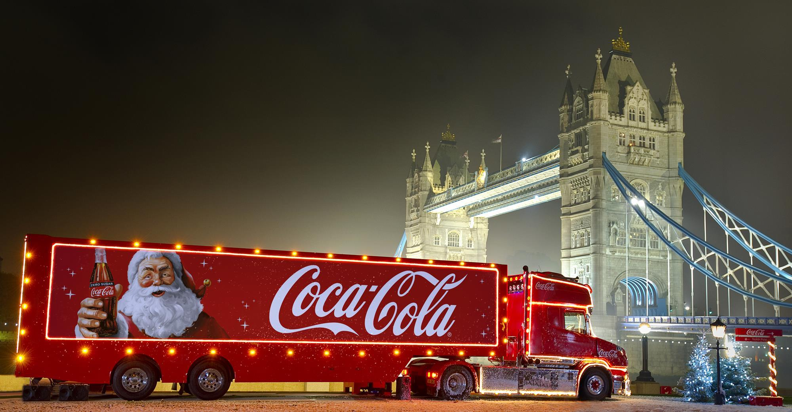
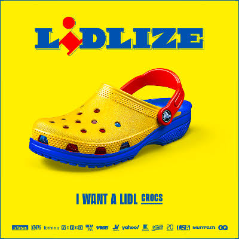
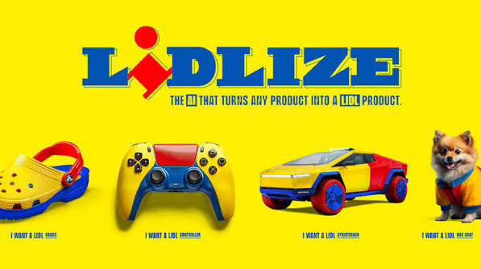
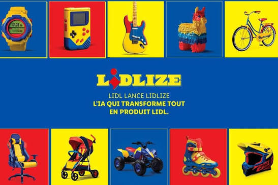

ComfyUI · Dynamic Creative Optimization · Go-to-Market · MERCATO
DCO e il mercato delle agenzie
La Dynamic Creative Optimization (DCO) è una tecnologia matura, costruita su template, ossia un assemblaggio costruito su regole di asset pre-definiti. Il punto chiave è questo: con l'ingresso prima del ML e poi con l'AI, questi ambienti e tools stanno diventando più flessibili, seppur con una certa inerzia. La creatività generata con l’AI (non più assemblata, ma generata e/o adattata) sta quindi entrando nel work-flow dei contenuti (immagini, video, ecc) e impattando con gli strumenti tradizionali dell’era-template, nati per controllare il livello dei risultati su slot predefiniti. Mentre l'evoluzione è quella dei controlli di qualità automatici, basati su adattamenti generativi e orchestrazioni. E quella della costruzione automatica di varianti delle storie, ad alto impatto col pubblico, perlomeno stimato. In breve, quello che abbiamo tracciato in Creatività Automatizzata per Campagne ADV. Lo sguardo a livello internazionale che vogliamo dare ora, è rivolto a chi già usa un controllo qualità AI-based, confrontato con la DCO tradizionale. In modo tale da capire dove le grandi piattaforme — pur avendo già capacità generative proprie — possano offrire un varco ai piccoli content producer. Dopo la panoramica globale, nel prossimo post cercheremo di entrare in quella italiana Il canale delle agenzie in Italia.
Il mercato in breve
-
1
Le agenzie di Dynamic Creative Optimization
Le agenzie di performance marketing che fanno DCO generano già grandi batch di varianti pubblicitarie per ogni campagna da testare, e sono convinte che il volume dei profitti le ripaghi. Ciò che manca è un modo per verificare se una variante si allontani dall'identità dei personaggi o dal brand (che è una domanda la cui soluzione è tipicamente AI-driven). Il loop di correzione automatica che abbiamo inserito, risponde in parte a questo problema. Se non riesci ad incrementare il livello di creatività (grazie a nuove varianti diverse e ingaggianti), puoi almeno garantire maggiore coerenza con il brand, senza pagare un revisore per ogni variante.
-
2
Campagne CPG globali multi-mercato
Le grandi aziende di beni di consumo confezionati (CPG)1 riciclano una stessa campagna su decine di mercati, ognuno con il proprio team locale e i propri adattamenti. A quei livelli di scala controllare ogni variante a mano diventa troppo oneroso. Ad esempio, lo spot natalizio "Holidays Are Coming" che Coca-Cola ha generato con l'AI nel 2024 è uno dei casi più citati: a pochi giorni dal lancio ha ricevuto critiche per le ruote di camion che sembravano scivolare invece di rotolare, e personaggi con dimensioni errate rispetto all'ambiente — due difetti che il controllo del giudice nella nostra pipeline dovrebbe poter segnalare, prima del controllo umano sul montaggio.

Coca-Cola, «Holidays Are Coming» (2024)Tre fermo immagine della campagna natalizia generata con l'AI citata sopra — l'esempio più ripreso dalla stampa per il tipo di errore (ruote che sembrano scivolare, figure fuori scala) che un passaggio di judge a ciclo chiuso dovrebbe intercettare prima del controllo umano. In certi casi, la revisione manuale non è solo costosa, è impossibile. "Lidlize" di Lidl France (agenzia Marcel, partner tecnologico Bria, giugno 2024) permetteva al pubblico di trasformare qualsiasi oggetto in un prodotto Lidl; Bria ha dichiarato oltre 1,7 milioni di immagini generate in tre settimane2. Il sistema ha funzionato bene: lo strato di coerenza con il brand, un modello addestrato ad hoc con supervisione, l'ha costruito lo stesso fornitore della generazione. Il ruolo di uno specialista, lì, è stato quello di verificare e calibrare la coerenza.
Si potrebbe osservare che queste campagne erano sicuramente costose, e quindi le librerie e i tool AI utilizzati non erano condizionati da basso budget. Ma va altresì notato che sono campagne di due anni fa, e realizzate da grandi agenzie (quindi meno flessibili agli aggiornamenti e ai cambiamenti di mercato dei tool AI). Inoltre sono trascorsi due anni, quindi eoni, nella scala temporale della AI, specialmente quella generatrice di immagini e video. Non a caso API come quelle di Google Gemini 4 Argon, sono in grado oggi di ottenere risultati molto più raffinati e complessi, a costi unitari molto bassi (vedi dco-costs-tech.html).


Lidl France, «Lidlize» (2024)Uno strumento online lasciava scegliere a chiunque un prodotto qualsiasi e restituiva, generata dall'AI, la stessa immagine ridisegnata nei colori e nel lettering di Lidl — come se fosse un prodotto a marchio Lidl — da condividere con il claim «I want a Lidl ___». Qui: un paio di Crocs, un controller, un'auto in stile Cybertruck, un cappottino per cani.
La DCO tradizionale, e dove si apre un varco di mercato
-
01
Cosa la DCO tradizionale fa bene e cosa male
La DCO tradizionale mantiene una posizione nel mercato dei media per ragioni storiche. Personalizza le campagne a una scala che nessun flusso di lavoro manuale potrebbe raggiungere — sostituendo testo, prezzo, call-to-action, immagine prodotto o colore di sfondo in base a posizione geografica, meteo, acquisti passati o ora del giorno — e questa personalizzazione migliora in modo misurabile il click-through e la conversione rispetto ai banner statici. Elimina anche un tipo specifico di lavoro di produzione: nessuno deve più esportare a mano centinaia di formati di banner e combinazioni di varianti per ogni segmento di pubblico.
I costi riguardano il funzionamento della DCO in sé, non un confronto con l'AI, che vedremo nei prossimi capitoli. Il meccanismo è un overlay modulare: un ritaglio 2D del prodotto incollato su un template di sfondo statico, con un cartellino del prezzo sovrapposto. Da qui l'espressione del «template fatigue», il nome che il settore stesso dà al fenomeno per cui ogni variante di ogni campagna finisce per somigliare allo stesso template con vestiti diversi, senza una vera coerenza stilistica o cinematografica. Il sistema dipende inoltre per intero da un feed XML o JSON: se questo feed ha qualche errore, o un attributo non corrisponde, l'annuncio si trascina dietro questi errori. E impostare le regole dinamiche, i template HTML5 e i tag di tracciamento su più DSP richiede comunque un lavoro di sviluppo iniziale concreto. Ovviamente tutti questi controlli da un anno a questa parte, possono essere molto migliorati con un LLM o un SLM di validazione sintattico/semantica dei formati.
C'è inoltre un altro tipo di limite, molto più importante rispetto alla AI — ed è quello che vedremo nel prossimo capitolo. La DCO tradizionale può sostituire ciò che sta dentro una scena già pronta, ma non può generare una scena o una storia multi-inquadratura nuova e coerente. Non ha un respiro narrativo. -
02
Dove il mercato stesso ha un varco
Quest'ultimo limite è dove il mercato stesso, non un singolo fornitore, offre un varco. Detto schietto: la DCO tradizionale è di fatto un layout switching guidato da un foglio di calcolo — regole e template che decidono quali pezzi già pronti debbano incastrarsi (in stile Flashtalking o Celtra), incapaci di generare qualcosa di nuovo. Quel vuoto è esattamente ciò che una pipeline di orchestrazione generativa potrebbe colmare: non un nuovo asset per ogni regola, ma dimenticare le regole, e fare una scena o una sequenza coerente, endogenicamente controllata per la sua stessa coerenza. Precisiamo: questi template sono agganciati a un livello generativo guidato dall'AI, che produce uno sfondo o uno scatto nuovo alla volta, dentro un template fissato (come potrebbero fare delle generazioni one-shot, stile Stable Diffusion di qualche anno fa). Quello che raramente viene realizzato è una sequenza/diagramma, capace di conservare la coerenza in uno storyboard di decine di inquadrature narrativamente distinte, o generare una scena multi-inquadratura davvero coerente.
-
03
Dove si trova davvero il vantaggio
Questo è esattamente l'apporto della pipeline descritta in precedenza — Il motore: generazione, controllo, export e in DCO: una Pipeline, Più Prodotti — : scene con coerenza di personaggi su un intero cast, non un singolo asset generato dentro un template; un ciclo di QA che controlla automaticamente ogni variante, invece di un grafico che le controlla a occhio una per una. E un pool di varianti finite (create ad hoc per il prodotto) consegnato all'interno di un DCO che un'agenzia già può utilizzare, senza bisogno di nuovo templating HTML5 o di ingegnerizzare le regole, per poterle adattare.
Letture correlate: Il canale delle agenzie in Italia, DCO: una Pipeline, Più Prodotti, Il motore: generazione, controllo, export, DCO: modello dei costi.
- Un team marketing CPG è il team interno di un'azienda di beni di consumo confezionati (cibo, bevande, prodotti per la casa, cura della persona) che decide le campagne — commissiona alle agenzie, approva le campagne e mantiene coerente con il brand l'esecuzione in ogni mercato. Nel processo di automazione descritto sopra, è il team che decide parametri, prompt e configurazioni varie: è l'organo con l'autorità di stabilire cosa significhi "on-brand" per i propri prodotti, cosa che viene in parte controllata dal loop interno del punto D (vedi diagramma in 'Il motore: generazione, controllo, export' ). ↩
- Bria, "Marcel wins Cannes Lions" (bria.ai), e l'iscrizione D&AD 2025 "Lidlize" (dandad.org). Bria dichiara "over 1.7 million" di visual generati "in three weeks"; l'iscrizione D&AD dell'agenzia cita oltre un milione di persone e più di 2.000.000 di prodotti. La campagna si è svolta a giugno 2024. Bria descrive lo strato di coerenza con il brand come un modello addestrato ad hoc più una moderazione a più livelli; non sono pubblicati tassi di blocco. Le cifre vengono dal fornitore tecnologico e dall'agenzia, non da un audit indipendente. ↩